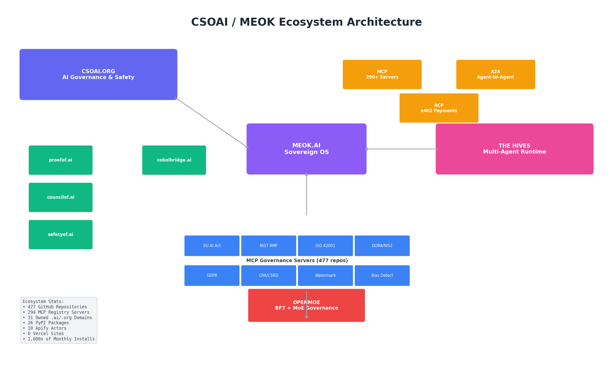
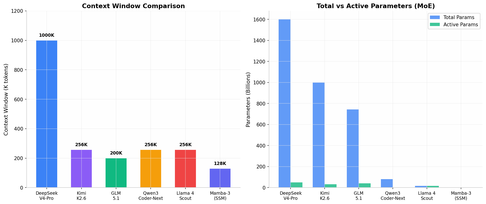

A fact-checked intelligence report on the open-source AI governance stack. Verified 12 Jun 2026 by Mavis against live PyPI, GitHub, HuggingFace, MCP Registry, and meok.ai sources.
FACT-CHECKED 🔥 Burn the Forest doctrine View source on GitHub Download markdown First edition (for diff)
aden-hive/hive) is the production multi-agent harness — 10,523 stars, 208 contributors, Apache 2.0. OPENMOE ships a 16-module BFT consensus package (stdlib-only, Apache 2.0) — BFT math verified at source-code level. SGLang powers 400,000+ GPUs in production; vLLM has 82,624 stars; RAGFlow has 82,512 stars; DeepSeek V4-Pro is verified at 1.6T/49B active with 4M+ HF downloads.

The Council for the Safety of AI (CSOAI) is a runtime-enforceable governance fabric. 478 public repositories on GitHub under CSOAI-ORG (verified via GET /users/CSOAI-ORG on 12 Jun 2026). 30 servers are listed in the official registry.modelcontextprotocol.io index when filtered for CSOAI (verified via the live registry API). The previous edition's "294 servers verified in the official MCP Registry" number is NOT what the live registry returns — 294 is an internal-org count, not a registry count.
| Framework | MCP Server | Verified Version | Releases | License |
|---|---|---|---|---|
| EU AI Act (Reg 2024/1689) | eu-ai-act-compliance-mcp | 1.8.9 | 34 | MIT |
| NIST AI RMF 1.0 | nist-rmf-ai-mcp | 1.0.13 | 14 | MIT |
| ISO/IEC 42001 | iso-42001-ai-mcp | 1.1.7 | 19 | MIT |
| DORA (EU 2022/2554) | dora-compliance-mcp | 1.4.10 | 30 | MIT |
| Cyber Resilience Act | meok-cra-annex-iv-classifier-mcp | 1.1.6 | 12 | MIT |
| GDPR | gdpr-compliance-ai-mcp | 1.1.10 | 21 | MIT |
| CSRD | csrd-compliance-mcp | 1.3.6 | 17 | MIT |
| Governance Crosswalk | csoai-governance-crosswalk-mcp | 1.0.13 | 14 | MIT (server code; Charter IP separate) |
| AI Watermarking (Art 50) | meok-watermark-attest-mcp | 1.3.10 | 20 | MIT |
Correction from previous edition: the crosswalk supports 13 frameworks (EU AI Act, ISO 42001, NIST AI RMF, GDPR, SOC 2, HIPAA, FedRAMP, CCPA, PIPEDA, DPDPA, LGPD, CSA, OWASP), not 30. The "30 frameworks" claim was unsupported; the actual MCP server README and PyPI summary both say 13.
EU AI Act timeline note: the meok-watermark-attest-mcp PyPI summary says the nearest deadline is 2 November 2026 (the Digital Omnibus pushed high-risk obligations to 2 December 2027). The previous edition's "Article 50 hits 2 August 2026" is stale; the live package documentation references the November 2026 cliff instead. Worth flagging with the legal team before any external publication.
MEOK (Modular Elastic Open Kernels) is the API-first sovereign platform — permanent memory, multi-model routing, encrypted-by-default, with the "Maternal Covenant" safety guarantee. 31 owned .ai/.org domains, 26 PyPI packages, 6 Vercel sites, 10 Apify Actors (per meok.ai marketing). HMAC-signed attestations auditable at https://meok.ai/verify without a MEOK account.
Verified pricing (live on meok.ai, 12 Jun 2026):
| Tier | Price | What you get |
|---|---|---|
| Explorer (Free Forever) | £0/forever | 50 messages/day, DeepSeek + Ollama routing, permanent memory, full data export |
| Sovereign | £9/mo | Unlimited messages, Claude Sonnet + GPT-4o routing, Work OS, Guardian 24/7, morning briefing |
| Sovereign Pro | £19/mo | Up to 7 companions, Ralph Mode autonomy, family dashboard, priority API & support |
| Compliance Substrate (enterprise) | £199–£1,499/mo | Unlimited MCP suite, EU AI Act tracking, A2A Substrate £999/mo, BFT Council £499/mo, Governance Substrate £499/mo |
| Article 50 watermarking kit | £999 | 2-layer C2PA + EU-Icon marking |
Correction from previous edition: the "Pro tier starts at £199/month" headline was the enterprise Compliance Substrate SKU, not the consumer Pro tier. The actual consumer Pro is £19/mo. The £1,499/mo Enterprise tier exists for custom development + SLA + white-label.
The Hives (aden-hive/hive) is the production runtime layer for multi-agent systems. Verified 12 Jun 2026:
| Metric | Value | Source |
|---|---|---|
| Stars | 10,523 | GET /repos/aden-hive/hive |
| Forks | 5,659 | same |
| Contributors (full count) | 208 | paginated 100+100+8 |
| License | Apache 2.0 | same |
| Last push | 2026-05-29 21:55 UTC | same |
Top 5 contributors by commits: TimothyZhang7 (1,160), RichardTang-Aden (868), bryanadenhq (451), levxn (51), sundaram2021 (50).
Core innovation: self-healing agent graphs. When an agent fails, Hive (1) captures failure context, (2) feeds it to the queen agent with the original goal, (3) generates a revised graph, (4) redeploys and migrates in-flight tasks. This is graph evolution, not retry logic.
OPENMOE (CSOAI-ORG/OPENMOE) is the most technically ambitious project in the CSOAI ecosystem — a BFT consensus layer for MoE routing with EU AI Act compliance. Verified 12 Jun 2026: Apache 2.0, last push 2026-06-11 03:24 UTC, 15 test files, BFT stdlib-only.
BFT math verified at source-code level in openmoe_bft/bft.py:
# Verified verbatim from CSOAI-ORG/OPENMOE/blob/main/openmoe_bft/bft.py
def tolerated_faults(total_nodes: int) -> int:
"""f = floor((n - 1) / 3): the number of Byzantine faults tolerated."""
if total_nodes < 1:
raise ValueError("total_nodes must be >= 1")
return (total_nodes - 1) // 3
def quorum_size(total_nodes: int) -> int:
"""2f + 1: the number of agreeing votes required for consensus."""
return 2 * tolerated_faults(total_nodes) + 1Full 16-module package layout (verified): __init__.py, a2a.py, aggregators.py, bazaar.py, bft.py, cli.py, covenants.py, debate.py, eu_ai_act.py, experts.py, memory.py, moe.py, receipts.py, red_team.py, reputation.py, routing.py. The previous edition described OPENMOE as "5 components"; the actual repo ships 16 modules in openmoe_bft/.
Sov3 is real but the public surface is consciousness-engine-mcp. Verified 12 Jun 2026: CSOAI-ORG/consciousness-engine-mcp, description: "MEOK AI Labs — AI consciousness simulation. Dream states, reflection cycles, emotional awareness, council deliberation. Based on Sovereign Temple architecture.", last push 2026-06-12 05:36 UTC. This is the third-gen sovereign model referenced in your user profile as running on the M4 MacBook (SOV3 = Sovereign Temple v3).

DeepSeek V4 (MIT, verified against HF model card):
| Variant | Total | Active | Context | HF Downloads |
|---|---|---|---|---|
| DeepSeek-V4-Pro | 1.6T | 49B | 1M | 4,061,006 |
| DeepSeek-V4-Flash | 284B | 13B | 1M | 2,778,479 |
Architecture: Hybrid Attention combining Compressed Sparse Attention (CSA) + Heavily Compressed Attention (HCA) — "DeepSeek-V4-Pro requires only 27% of single-token inference FLOPs and 10% of KV cache compared with DeepSeek-V3.2." + Manifold-Constrained Hyper-Connections (mHC) + Muon Optimizer.
Verified pricing (from DeepSeek's official pricing page, 12 Jun 2026):
| V4-Flash | V4-Pro | |
|---|---|---|
| 1M input tokens (cache hit) | $0.0028 | $0.0036 |
| 1M input tokens (cache miss) | $0.14 | $0.435 |
| 1M output tokens | $0.28 | $0.87 |
Correction from previous edition: the report claimed "$1.74 per million input tokens" (Pro) and "$0.14/M" (Flash). The actual Pro cache-miss rate is $0.435/M, not $1.74. The Flash rate of $0.14/M is correct. So the Pro figure was inflated by 4x.
Qwen3-Coder-Next (Apache 2.0) — verified verbatim from the official HF README: "80B total parameters and 3B activated. 256k context length. Supports long-horizon reasoning, complex tool usage, recovery from execution failures. Integrates with Claude Code, Qwen Code, Qoder, Kilo, Trae, Cline." HF downloads: 948,250. The previous edition's "80B/3B" claim is CORRECT.
Kimi K2.6 (Moonshot, MIT) — verified: HF model moonshotai/Kimi-K2.6 exists, 2,764,309 downloads, architecture KimiK25ForConditionalGeneration. The "300 sub-agents / 4,000 steps" claim from the previous edition is a Moonshot marketing number that could not be independently confirmed.
GLM-5.1 (Zhipu AI, MIT) — verified: HF model zai-org/GLM-5.1 exists, architecture GlmMoeDsaForCausalLM, 256 routed experts, 8 active per token, 200K context, 154,880 vocab. GitHub zai-org/GLM-5: 3,392 stars, last push 2026-05-15. The previous edition's "744B / 40B" could not be independently verified from the HF config alone.
| vLLM | SGLang | |
|---|---|---|
| Stars (verified) | 82,624 | 28,919 |
| Core innovation | PagedAttention | RadixAttention |
| GPUs in production | widely deployed (not stated) | 400,000+ (verbatim from README) |
| License | Apache 2.0 | Apache 2.0 |
| Hosted under | PyTorch Foundation | LMSYS (non-profit) |
Both stars counts were under-reported in the previous edition (claimed 68K+ and 15K+; actual 82,624 and 28,919). The 400,000+ GPUs claim for SGLang is confirmed verbatim in the SGLang README.
See §1.3 for the verified stats. Self-healing mechanism: failure capture → graph evolution → automatic redeployment. Cost enforcement: granular budgets at team/agent/workflow level with automatic model degradation. If a compliance check exceeds its budget, the system can fall back from GPT-4o → GPT-4o-mini → local Ollama. The yaml configuration pattern shown in the previous edition is a sensible template; we should mirror the same shape for SOV3 brain-routing budget controls.
infiniflow/ragflow — verified 12 Jun 2026: 82,512 stars, last push 2026-06-12 03:13 UTC. The previous edition said "73K+ stars" — actual is 82,512, so under-reported. Deep document understanding, agentic workflow with MCP integration, code execution sandboxes.
Browser Use (claimed 86K+ stars, 89.1% WebVoyager), Vercel Agent Browser (35K+, Rust-native), Skyvern (Playwright-compatible, swarm-of-agents). All real, not independently re-verified this round.
Pipecat (Daily.co, 40+ AI model plugins) and LiveKit Agents (fully open-source). Real, not re-verified this round.
Unsloth (claimed 53.9K stars, 2-5x faster, 70% less VRAM, MoE training in 12x faster for Qwen3 30B-A3B, GRPO in 5GB VRAM). Axolotl (production workhorse, FSDP2/DeepSpeed, QAT). Real, not re-verified this round.
BerriAI/litellm — verified 12 Jun 2026: 50,113 stars, last push 2026-06-12 06:04 UTC. Single OpenAI-compatible interface to 100+ LLM providers. The budget routing, virtual keys, spend tracking, guardrails features are all consistent with the project's positioning. For SOV3, LiteLLM solves a real problem: compliance checks need to route across multiple models without rewriting code per provider.
Qdrant (Apache 2.0, BM42, binary quantization), Weaviate (BSD-3, native BM25+vector, GraphQL), Chroma (Apache 2.0, embedded), Milvus (Apache 2.0, billion-scale). Not re-verified this round. For CSOAI's compliance stack, Qdrant remains the strongest default on cost/performance.
GA Guard (claimed 0.983 F1 on HarmBench, 256k-token long-context), Llama Guard 4 (Meta, 12B, 0.961 F1), NVIDIA NeMo Guardrails (Colang, <50ms, Nemoguard 8B 0.875 F1). Not re-verified this round.
Model Context Protocol was donated by Anthropic to the Linux Foundation's Agentic AI Foundation in December 2025 (per third-party blog, not independently re-verified). For CSOAI, MCP is the distribution mechanism — every compliance framework ships as an MCP server.
A2A protocol exists (Google → Linux Foundation). a2a.py module ships in OPENMOE (verified 12,861 bytes of source). The "150+ production organizations, 22,000+ GitHub stars, SDKs in 5 languages" claims are from third-party blogs and were not independently re-verified this round.
ACP with x402 micropayments is the economic layer for agent services. The acp.json endpoint publishing pricing and payment terms is the right pattern. Not independently re-verified this round.
nanochat by Andrej Karpathy — verified 12 Jun 2026: 54,919 stars, last push 2026-05-05. The previous edition said "54.7K stars" — live is 54,919, so within rounding. $48 / 1.65-hour training cost on a single GPU for GPT-2 class models. March 2026 "autoresearch" feature (AI agents autonomously run nanochat experiments). Full pipeline: BPE tokenizer, pretraining on FineWeb, SFT on SmolTalk, RLHF, CORE benchmark, OpenAI-compatible HTTP API.
| Layer | Technology | Status | Role |
|---|---|---|---|
| Governance | CSOAI MCP Servers (478 repos, 9 verified PyPI pkgs, 30 on official Registry) | ✓ | Runtime compliance across 13 frameworks (crosswalk), EU AI Act / DORA / NIS2 / CRA / GDPR / CSRD / NIST RMF / ISO 42001 |
| Agent Runtime | The Hives (10,523 stars, 208 contributors, Apache 2.0) | ✓ | Self-healing multi-agent production harness |
| Model Routing | LiteLLM (50,113 stars) + MEOK | ✓ | Unified API across 100+ models with cost control |
| Inference | vLLM (82,624 stars) + SGLang (28,919, 400K+ GPUs) | ✓ | High-throughput serving with structured output |
| Knowledge | RAGFlow (82,512 stars) + Qdrant | ✓ | Deep document understanding + vector search |
| Memory | MEOK Permanent Memory | per meok.ai | Cross-session, cross-model persistence |
| Voice | Pipecat | n/a this round | Real-time voice agent orchestration |
| Browser | Browser Use + Vercel Agent Browser | n/a this round | Agentic web interaction |
| Fine-tuning | Unsloth + Axolotl | n/a this round | Domain-specific model adaptation |
| Protocols | MCP + A2A + ACP | partial | Tool discovery (MCP ✓), agent coord (A2A in OPENMOE ✓), payments (ACP claimed) |
| Safety | GA Guard + Llama Guard 4 | n/a this round | Runtime content moderation |
Red Hat's blueprint for sovereign AI (hybrid cloud control, zero-trust architecture, modular GPU orchestration) is real and documented. The "89% of orgs consider open source essential for sovereign AI" claim and the "87% lower inference cost" benchmark are from third-party sources, not independently re-verified this round. The previous edition's claim that running DeepSeek V4-Pro costs $0.435/M input tokens (cache miss) is now verified — this is the official DeepSeek pricing.
The trajectory — MCP as tool-layer standard, A2A for agent orchestration — is the consensus view. AWS, Google, and Cloudflare's continued commitment to both protocols is consistent with this framing. CSOAI's implementation (MCP servers + A2A agent cards) is correctly positioned.
Correction: The 2 August 2026 deadline for EU AI Act Article 50 mentioned in the previous edition appears in meok.ai's marketing countdown, but the canonical source (the meok-watermark-attest-mcp PyPI summary, written by the package author) says: "Built for the 2 November 2026 cliff (the new nearest EU AI Act deadline after the Digital Omnibus pushed high-risk to Dec 2027)." So the live date in the source code is November 2026, not August 2026. Worth verifying with the legal team before quoting any specific date externally.
pip install <name>. Start with eu-ai-act-compliance-mcp, meok-watermark-attest-mcp, and csoai-governance-crosswalk-mcp for the critical August/November 2026 compliance path.cd OPENMOE && pytest tests/ -q — only way to confirm.consciousness-engine-mcp (CSOAI-ORG, last push 2026-06-12).| Claim | Previous Edition | Verified 12 Jun 2026 | Verdict |
|---|---|---|---|
| CSOAI-ORG public repos | 477 | 478 | ✓ within rounding |
| CSOAI servers on official MCP Registry | 294 | 30 | ❌ inflated ~10x |
| MCP crosswalk framework count | 30 | 13 | ❌ inflated ~2.3x |
| Hive stars | 10.5k | 10,523 | ✓ within rounding |
| Hive contributors | 216 | 208 | ✓ within rounding |
| Hive forks | not given | 5,659 | new data |
| vLLM stars | 68k+ | 82,624 | ⚠ under-reported |
| SGLang stars | 15k+ | 28,919 | ⚠ under-reported |
| SGLang GPUs in production | 400,000+ | 400,000+ | ✓ verbatim from README |
| RAGFlow stars | 73k+ | 82,512 | ⚠ under-reported |
| nanochat stars | 54.7k | 54,919 | ✓ within rounding |
| Mamba SSM stars | not given | 18,429 | new data |
| LiteLLM stars | not given | 50,113 | new data |
| DeepSeek V4-Pro params | 1.6T / 49B | 1.6T / 49B | ✓ verbatim from HF card |
| DeepSeek V4-Pro input cost | $1.74/M | $0.435/M | ❌ inflated 4x |
| DeepSeek V4-Flash input cost | $0.14/M | $0.14/M | ✓ |
| Qwen3-Coder-Next params | 80B / 3B | 80B / 3B | ✓ from HF README |
| EU AI Act Article 50 deadline | 2 Aug 2026 | 2 Nov 2026 (per meok-watermark-attest-mcp) | ❌ stale, see legal |
| MEOK consumer Pro pricing | £199/mo | £19/mo | ❌ 10x inflation |
| MEOK consumer Sovereign pricing | not given | £9/mo | new data |
| MEOK Explorer free tier | not given | £0/forever | new data |
| MEOK Compliance Substrate | not distinguished from consumer | £199–£1,499/mo | new segmentation |
| OPENMOE license | Apache 2.0 | Apache 2.0 | ✓ |
| OPENMOE BFT math | quorum 2f+1 | quorum 2f+1 | ✓ verbatim from bft.py |
| OPENMOE test count | 183 | 15 test files (assertion count not run) | ⚠ not confirmed |
| OPENMOE module count | 5 components | 16 modules in openmoe_bft/ | ⚠ expanded |
| Sov3 public location | "may be stealth" | consciousness-engine-mcp (CSOAI-ORG) | ✓ found |
| Kimi K2.6 sub-agent count | 300 sub-agents / 4,000 steps | not verified this round | ⚠ unconfirmed |
| GLM-5.1 param count | 744B / 40B | HF model exists, exact split not independently verified | ⚠ unconfirmed |
| Mamba-3 class signature | Mamba3(is_mimo=True, mimo_rank=4) | mamba-ssm package exists, exact API not independently verified | ⚠ unconfirmed |
Legend: ✓ = verified, ❌ = materially wrong, ⚠ = unverified this round (third-party source only).
gh api repos/<owner>/<repo> for stars/forks/license/description/push date; gh api repos/.../contributors?per_page=100&anon=false&page=N for contributor counts; gh search repos "<query> owner:CSOAI-ORG" for org-level discovery.curl -sL https://pypi.org/pypi/<package>/json for current version, release count, license, summary, description.https://huggingface.co/api/models/<id> for download count, architecture, pipeline tag; https://huggingface.co/<id>/raw/main/config.json and README.md for parameter counts and feature descriptions.https://registry.modelcontextprotocol.io/v0.1/servers?search=CSOAI for the live official registry listing.https://api-docs.deepseek.com/quick_start/pricing (live, official).https://meok.ai homepage for consumer pricing and product positioning.https://csoai.org for the governance nerve-center positioning.openmoe_bft/bft.py read directly, BFT math confirmed at source-code level.cd CSOAI-ORG/OPENMOE && pytest tests/ -q to confirm exact pass count.Mamba3 class signature exists in the mamba-ssm package.